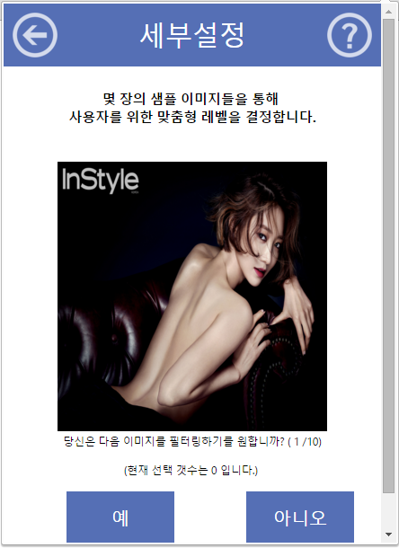

1. 메인 화면
프로그램의 메인 화면입니다.
최상단의 좌측 메뉴로는 전 화면으로 이동할 수 있고 우측 메뉴로는 그 페이지와 관련된 매뉴얼을 확인할 수 있습니다.
그 아래에선 지금까지 웹 상에서 로딩된 이미지의 수를 표시해주고 로딩된 이미지 중 필터링된 이미지의 수를 표시해줍니다.
좌측에선 그 비율을 확인할 수 있고 상단에선 지금까지의 비율을 그래프로 표시해줍니다.
아래의 전원 버튼으로 켜고 끌 수 있으며 설정 버튼으로 차단 레벨을 설정하는 창으로 이동할 수 있습니다.
2. 설정 화면
 차단 레벨을 설정하는 설정 화면입니다
차단 레벨을 설정하는 설정 화면입니다간단하게 프리셋을 설정할 수 있으며 설정을 변경했다면 아래의 저장 버튼을 눌러 저장할 수 있습니다.
또한 세부설정 글자를 클릭해 간단한 튜토리얼을 진행하여 맞춤 설정을 만들 수 있습니다.
튜토리얼은 차단 수위를 측정하기 위해 수위가 높은 이미지가 다수 포함되어 있으니 주의하여 진행하시기 바랍니다.
3. 튜토리얼 화면
 사용자 맞춤 설정을 위한 튜토리얼 화면입니다.
10개의 여러 수위를 가진 이미지를 차단을 원하는가, 차단을 원하지 않는가를 조사해 사용자에 맞는 차단 수위를 결정하게 됩니다.